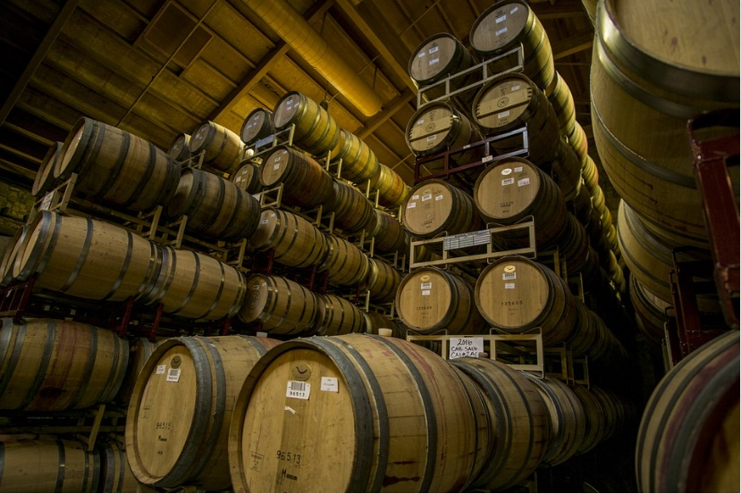
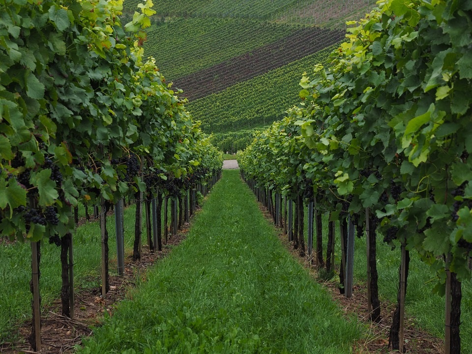
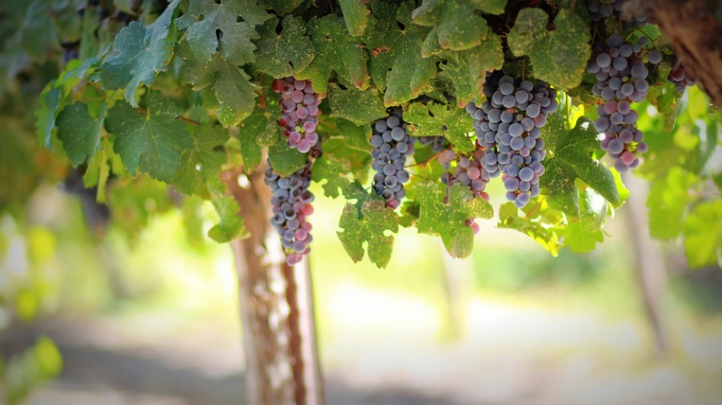

A los pies del cerro Manzano y en el corazón del Valle de Uco, “La Catalina” es la primera bodega argentina construida con criterios de gravedad; lo que hace que la uva entre en la bodega por la parte mas alta y que en cada una de sus fases de elaboración vaya descendiendo, hasta la guarda en botella, que se sitúa en la parte mas baja de la bodega.
Ubicada a 750 msnm, se caracteriza por la presencia de arcilla y limos en el suelo, lo que le transmite a la materia prima las propiedades necesarias para hacer un producto con características únicas




